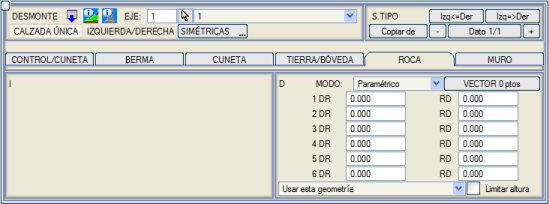
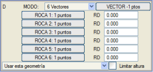
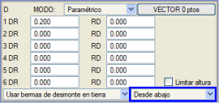

| |
|
KAYADA YARMA GEOMETRİSİ
|
Belirli bir tip kesitin kullanıldığı hesaplama aralıklarında, yarmalar tarafından ulaşılabilecek kaya yüzeyleri için belirli bir derinlik tanımlanmışsa, kesitin kaya içinde kalan bölümünde uygulanacak bir kesit öngörülmelidir. 
 Bu kayada yarma kesiti, hendekten sonra ve zemindeki yarmadan önce uygulanır. Diğerlerine benzer şekilde, kayadaki yarma parametrik, vektörel veya aşağıda göreceğimiz gibi 6 vektör aracılığıyla tanımlanabilir. Parametrik tanımda, her kaya türü için iki değişken kullanılır: Bu kayada yarma kesiti, hendekten sonra ve zemindeki yarmadan önce uygulanır. Diğerlerine benzer şekilde, kayadaki yarma parametrik, vektörel veya aşağıda göreceğimiz gibi 6 vektör aracılığıyla tanımlanabilir. Parametrik tanımda, her kaya türü için iki değişken kullanılır:
Başka bir vektörel tanım şekli, açığa çıkan kaya değeri (RD) ek olarak her kaya seviyesi için farklı bir vektör tanımlamaya olanak tanıyan 6 vektördür. Her kayanın farklı yükseklik ve şevlere sahip palyeler ve basamaklarla tanımlanmış bir vektörü olduğu ve iki kaya arasında açığa çıkan kaya genişliği tanımlanmadığı durumlar için: eğer bir kayanın en üst basamağı eksikse, bu artık yükseklik ile üstteki kayanın ilk basamağının toplamı, alttaki kayanın basamakları için öngörülen yüksekliği aşamaz. Örn: Kaya 2, her 10m'de bir basamaklı ve Kaya 1, her 6m'de bir basamaklı (ve RD=0). Eğer Kaya 2'nin son basamağının yüksekliği 7m ise, Kaya 1'in ilk palyesi, 7+6=13m'lik bir basamaktan kaçınmak için öngörülen 6m yerine 3m'de (7+3=10) görünecektir. Kayadaki yarma tanımının türünden bağımsız olarak, alt kısımdaki açılır menüde program aşağıdaki seçenekleri sunar:
Bu durumda, bu palyelerin hangi kaya seviyesinden itibaren kullanılacağı seçilebilir.
 Eğer Yüksekliği sınırla seçeneği etkinleştirilirse, alternatif tip kesite geçişi tetikleyen maksimum yarma yüksekliği kontrolüne, kayadaki yarmanın gerçek yüksekliği de dahil edilir. Bu alternatif kesitin tanımlanmış olması ve ayrıca bu alternatif kesitin tüm bölümleri (kontrol, palye, hendek, kaya, zemin,..) içermesi seçeneğinin de aktif olması gerekir. Bu seçeneğin işleyişini göstermek için aşağıdaki örnek kullanılabilir: Tip kesit 1'de, zemindeki yarma için ZD3 = 50 m'lik bir maksimum yükseklik tanımlanmıştır. Alternatif kesit olarak 2 numaralı kesit mevcuttur ve bu kesitin enkesitin tüm bölümlerini içermesi seçeneği etkindir. Belirli bir kilometrede, zemindeki yarma yüksekliği 25 m ve kayadaki yarma yüksekliği 30 m'dir.
Bu bağlamda ve bu seçenek devre dışıyken, o kilometrede tip kesit 1 kullanılırken, seçenek etkinken tip kesit 2 kullanılacaktır. |